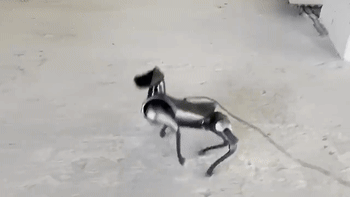
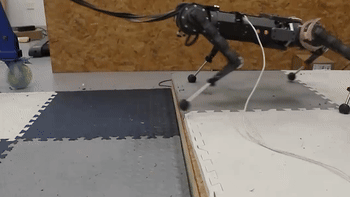

I am a PhD student at Northwestern University (advised by Prof. Sam Kriegman) and founder of Yodamayda Robotics. My research focuses on sequential models for universal locomotion control and generative models for robot design. A full list of my publications is available on Google Scholar, and all software projects can be found on GitHub.

Agile modular legged robots
Preprint, 2025
with VAE+BO for morphology optimization and RL+Transformer for morphology-agnostic locomotion control. This is the first agile modular legged robot.

Self-destruction of legged robots
Submitted, 2025
The policy learns to efficiently self-destruct and move forward. This is the first demonstration of a robot automatically changing designs on the fly.

Learning to jump / backflip / sideflip
IROS, 2024
with a Transformer-based state estimator for prediction of robot height and velocity. This is the first demonstration of quadrupedal sideflips.

Learning to walk with changing shapes
ICRA, 2023
using morphology-conditioned Transformer. This is the first Transformer-based universal controller on a real robot.

A quadruped robot climbing tables
RA-L, 2022
using Bayesian optimization. The robot is trained in the real world without simulation.

A quadruped robot walking bipedally
RA-L, 2022
using RL and hardware modifications. This is the first demonstration of a modern quadruped robot walking bipedally.